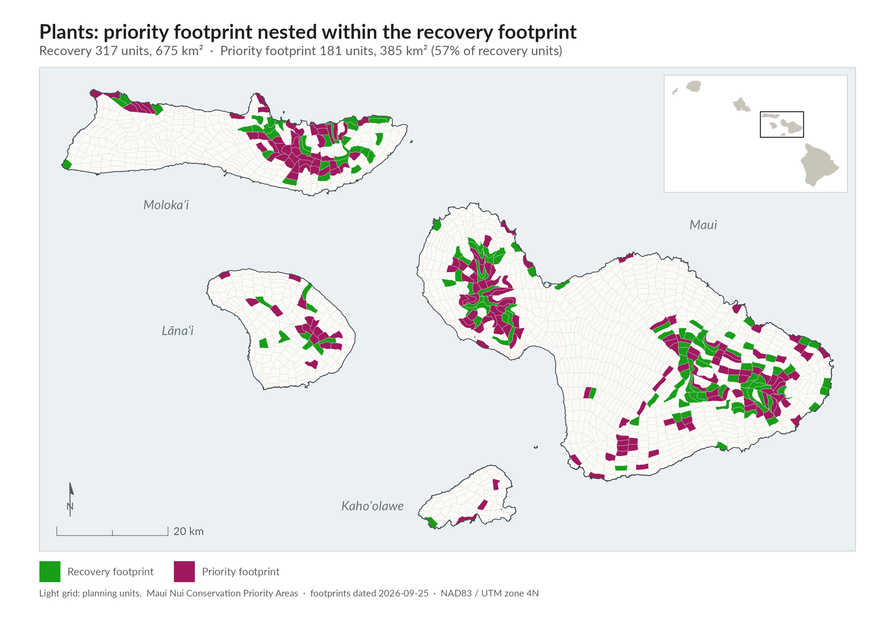
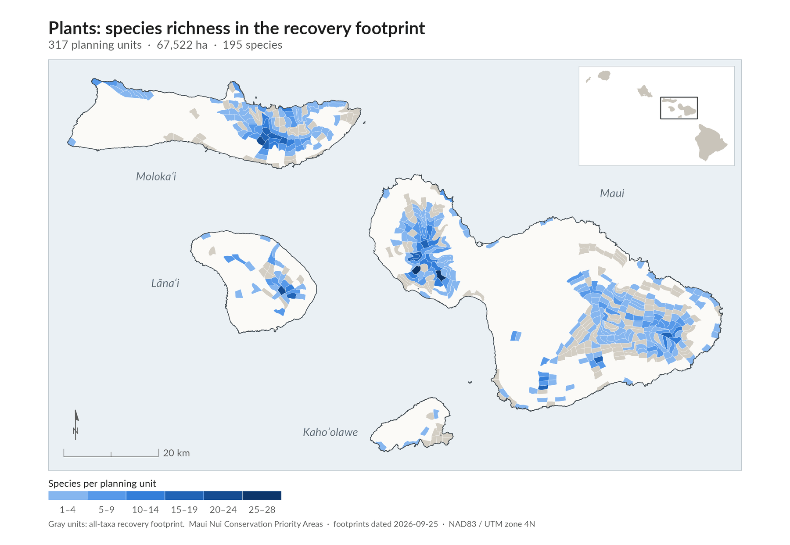
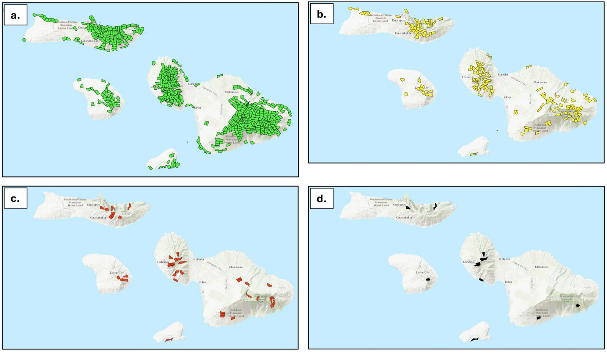
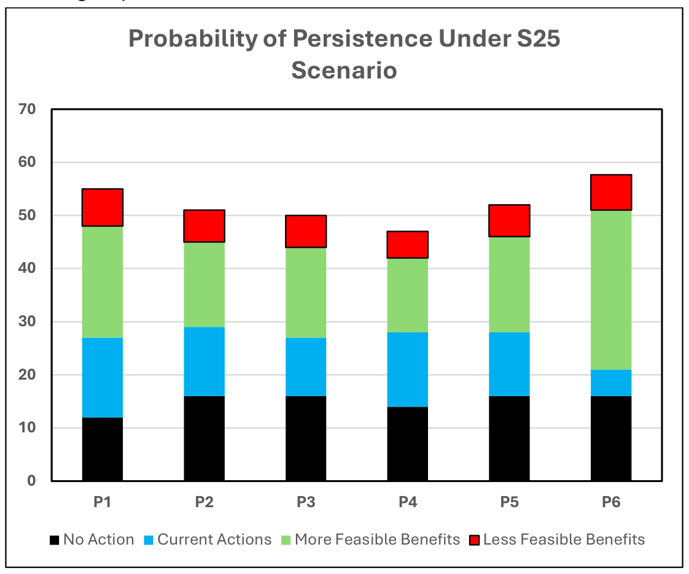

The species
Appendix 4 of the plan lists all 197 at-risk plants.plan p.48 It sorts them into priority tiers that the plan also uses to set monitoring effort:plan App 4 p.A4-7; Ch 8 p.107
At-risk plant tiersplan App 4 p.A4-7; p.19, Table 1
| Tier | Meaning | Species |
|---|---|---|
| PEPP | Plant Extinction Prevention Program species: fewer than 50 individuals in the wild, facing imminent extinction | 102 |
| POP | Species with few populations | 30 |
| ROI | Species that are rare on an island | 19 |
| Insufficient data | Not enough information to identify recovery areas | 2 |
Most at-risk plants are listed as endangered. Two species lacked enough information to identify recovery areas, so 195 of the 197 were included in the recovery footprint analysis.plan p.50
Some of the at-risk plants
The at-risk list includes many native lobelioids, such as haha (Cyanea) and ʻoha wai (Clermontia), as well as koʻokoʻolau (Bidens), haʻiwale (Cyrtandra) and nohoanu (Geranium).plan App 3 pp.A3-1 to A3-3
Examples from the plan's species listsplan App 3 pp.A3-1 to A3-3; App 4 pp.A4-1 to A4-3
| Hawaiian name | Scientific name | Status | Tier | Known occupied planning units |
|---|---|---|---|---|
| Pua ʻala | Brighamia rockii | Endangered | PEPP | 7 |
| Kokiʻo | Kokia cookei | Endangered | PEPP | 0 |
| ʻOha wai | Clermontia oblongifolia subsp. mauiensis | Endangered | PEPP | 28 |
| Haha | Cyanea mceldowneyi | Endangered | POP | 14 |
| ʻAhinahina | Argyroxiphium sandwicense subsp. macrocephalum | Threatened | none | 27 |
Status and trends
Plants are the most data-rich group in the plan.plan App 1 p.A1-6 Sources include population data from the Plant Extinction Prevention Program (PEPP), federal recovery plans, the Hawaiʻi State Wildlife Action Plan, standardized recovery goals from the Hawaiʻi and Pacific Plant Recovery Coordinating Committee (HPPRCC), a pilot habitat prioritization study on East Maui, and a study of how climate change may shift plant distributions (Fortini et al. 2013).plan p.49, Ch 6d iv
PEPP tracks the location and status of 685 known sitesplan p.48 across Maui Nui. All 102 imminent-extinction species are already being addressed by PEPP.plan p.48
Plants are the group least likely to reach a 50 percent chance of persistence.plan p.25 Even with extensive plant-focused management, it is hard to get plants as a group to 50 percent, and the figure drops to 45 percent when adjusted for feasibility.plan p.53, Ch 6d vi
Threats
Plants face many threats. The most important are habitat loss and invasive species.plan p.47 The plan names these specific threats and the number of at-risk plants each one affects:plan pp.47-48
Landscape-level threats needing new control techniquesplan pp.47-48, Ch 6d i
| Threat | At-risk plant species affected |
|---|---|
| Slugs | 101 |
| Landslides and erosion | 96 |
| Drought | 79 |
| Flooding | 60 |
| Loss of pollinators | 44 |
| Black twig borer | 21 |
| Ants | 7 |
| Coconut rhinoceros beetle | 1 |
| Naio thrips | 1 |
| Rapid ʻŌhiʻa Death and other ʻōhiʻa diseases | not given |
Other threats the strategy addresses are ungulates (introduced hoofed animals), invasive weeds, rats, invertebrate pests, wildfire and ongoing climate change.plan p.47
Emergency actions to prevent extinction
Emergency actions are needed for the 102 plants facing imminent extinction: survey, monitor, collect seeds and propagules, control local threats, and propagate and outplant.plan p.47; p.21, Table 2
PEPP focuses on native plants with fewer than 50 individuals left in the wild. It follows standard procedures to address local threats from rats, slugs and invasive weeds. It collects seeds, cuttings and other tissue for genetic storage or seed banking and, when possible, outplants nursery-grown plants back into the wild.plan pp.48-49
The main need is to expand PEPP and DOFAW capacity on Maui, Molokaʻi and Lānaʻi to:plan p.49 - connect stand-alone datasets to mapped data systems, and enter legacy paper records into computer databases; - survey 95 percentplan p.49 of potential habitat; - monitor at least one population of each species every year; - control the main local threats (such as ungulates, rats, weeds and slugs); - collect and maintain ex situ (off-site) collections from up to 50 maternal linesplan p.49 of each PEPP species, or 90 percent of the remaining live founders; and - outplant representatives of all available founders in at least one site.
Recovery strategy
Goals
The plan set initial recovery targets for plants by reviewing published recovery plans and consulting experts and the interagency HPPRCC. The goals take into account multi-island distributions, plant life histories and how widely each species is distributed.plan p.49 Appendix 4 gives each species' target number of recovery populations. The full recovery footprint provides for up to 10 populations of each at-risk plant.plan p.28
To meet the goals, the plan calls for managing the plant recovery footprint to:plan p.47 - remove ungulates from recovery habitat and supporting ecosystem areas; - control key invasive weeds, rats and invertebrate pests locally until landscape-scale control is possible; - maintain 685 existing populations and establish or locate 891 new populationsplan p.47; - develop and carry out a fire management strategy to protect the plant recovery footprint and supporting ecosystems; and - assess ongoing climate change to see whether replacement recovery habitat is needed.
It also calls for more seed storage, genetic storage and seedling production to create or greatly expand over 1,500 populations, with 862,500 or moreplan p.47 plants or seedlings, plus common matrix species for general habitat restoration. Remaining native ecosystems should be protected and managed so that species that are common today do not decline.plan p.48
Recovery footprint and priority footprint
Unlike the bird groups, Plants followed the plan's algorithmic pathway. Footprints were selected with OptimTFE, the plan's spatial prioritization algorithm, and then reviewed and refined by experts.plan p.52; App 1 pp.A1-5 to A1-6 The plan gives four reasons this suits plants: the group is very large (197 species), there is a great deal of information about it, there are a very large number of possible places to act, and a dedicated group of experts was available to guide and review the results.plan pp.49-50
The process produced four nested footprints:plan p.50, Ch 6d v
Plant conservation footprintsplan p.50; p.27, Table 4 (PUs and areas)
| Footprint | What it covers | Planning units | Area (km²) |
|---|---|---|---|
| Recovery footprint | Habitat for 195 at-risk plants | 317 | 675 |
| Priority footprint | Planning units needed for three recovery populations of each of the 195 plants | 155 | 325.5 |
| Secondary implementation areas | The 36 PEPP species found in three or fewer planning units | 39 | 83 |
| Primary implementation areas | The 14 plants with only one known occupied or recently occupied planning unit | 12 | 26 |
Management is expected to start in the narrowest footprint and quickly move to the next one, which covers species with three or fewer occupied planning units.plan p.50 The priority and narrower footprints are priorities for getting started, not for long-term recovery. The full recovery footprint is the desired end result.plan p.28


Map as printed in the plan (Figure 9a-d)Details

How the plant footprint was delineated (TFE-SCP and OptimTFE)Details
- The process. The plant work follows the complete Transparent, Flexible and Expert-engaged Systematic Conservation Planning (TFE-SCP) process, the plan's comprehensive planning process: from data compilation, through algorithmic outputs and expert fine-tuning, to an implementation-ready recovery footprint.plan p.52; App 1
- Inputs. Climate-suitability models, habitat-suitability layers, population targets, logistical constraints, and requirements to represent each species across islands and mountain masses.plan p.50 Delineated populations were preferred where available; vetted occurrence records were used otherwise. Candidate footprints had to meet species-specific recovery targets on each mauna (mountain mass).plan App 1 p.A1-6
- Algorithmic selection. OptimTFE builds many candidate footprints. Each meets all species targets, but they differ in which planning units they select.plan App 1 p.A1-5 To choose a draft, OptimTFE weighed the occurrence of known populations, habitat quality, overlap with biodiversity reserves, areas where ungulates are managed, and a preference for a compact footprint.plan p.52 The plant team put the most weight on habitat quality, biodiversity reserves, ungulate management and compact footprint area.plan App 1 p.A1-6
- Expert refinement. DOFAW coordinated the taxon expert team, and experts refined the draft footprint in the Adaptive Conservation Planner (Conservation Planner). They moved, added and removed species targets and documented their reasons.plan App 1 p.A1-6
- What expert review added. The draft footprint gave potential recovery habitat for 180 of the 195 species and 995 potential populations.plan p.52 Expert review found habitat for the other 15 species and 449 more potential populations, for 1,444 potential plant populations at full buildout.plan p.52
- Other inputs. Other agencies provided data and analyses, such as species climate-suitability maps and refined habitat quality maps.plan p.48
- Narrowing the priority footprint. The Conservation Planner was used to narrow the priority footprint step by step: from all 195 plants with habitat data, to the 101 PEPP species with habitat data, to PEPP species with three or fewer known occupied planning units, and finally to species with a single known occupied planning unit.plan p.27, Ch 5e
- Appendix 1 figures. Appendix 1 describes the reviewed priority footprint as 181 planning units, selecting up to three recovery populations per species where feasible while keeping each species represented across the islands and mountain masses where it occurs. Filtering it to PEPP species identifies 110 planning units.plan App 1 p.A1-6
Choosing sites inside a planning unitDetails
A planning unit (about 2 km²) should hold enough habitat for one population of an at-risk plant, but it is still a large area to search for the best outplanting site, a site that suits several species, or a fence line.plan p.52 Additional tools (Appendix 5) will help managers focus field searches using fine-scale maps of species occurrences, habitat quality, microhabitat assessments in the Find My Microhabitat Tool, Potential Recovery Sites based on climate suitability and habitat quality, and recent climate trends.plan pp.52-53 The Conservation Planner shows the target species and expert notes for each planning unit, including why it was selected.plan App 1 p.A1-6

Priority conservation actions
The plan's action prioritization used a modified Priority Threat Management (PTM) process. PTM estimates how much each of 27 strategies would raise the chance that each species group persists over 20 years.plan p.84, Ch 6j For plants, the plant- and invertebrate-focused combination strategy S25 is the only strategy that raises persistence above 40 percent.plan App 2 p.A2-10 Plant groups come close to 50 percent only through the combined effect of many actions, so it matters to find combinations that work well together.plan p.55
S25 actions ranked by benefit to plants, with the recommended orderplan p.55, Table 17
| Strategy | What it involves | Persistence on its own (%) | Recommended order |
|---|---|---|---|
| S13 | Future tools for rare plants and invertebrates (ex situ methods, plant and invertebrate propagation facilities, controls for coconut rhinoceros beetles, black twig borers and naio thrips) | 26 | 1 |
| S5 | Terrestrial habitat management for at-risk species | 24 | 3 |
| S11 | Landscape-scale rat suppression | 23 | 6 |
| S3 | Future ungulate fencing | 23 | 2 |
| S8 | Invasive invertebrate predator control (ants and yellowjackets) | 22 | 5 |
| S7 | Invasive vertebrate predator control (rats, cats, dogs, mongoose, barn owls, cattle egrets, rabbits) | 21 | 4 |
Some actions that score lower on their own come first because other work depends on them. For example, ungulate fencing is usually needed before plants are reintroduced to the wild.plan p.55 The recommended sequence is:plan p.55 1. S13: Future tools for rare plants and invertebrates. Develop ex situ methods; build propagation facilities; develop controls for slugs, coconut rhinoceros beetles, black twig borers and naio thrips; and restore pollination for the 44 plant speciesplan p.55 that need bird pollinators. This also covers infrastructure, databases and training for future staff. 2. S3: Future ungulate fencing. 3. S5: Terrestrial habitat management for at-risk species. 4. S7: Invasive vertebrate predator control. 5. S8: Invasive invertebrate predator control (ants and yellowjackets). 6. S11: Landscape-scale rat suppression.
S13, future tools for rare plants and invertebrates, is the single most important individual action in the plan. Thirteen of the 17 species groups ranked it in their top three.plan p.86, Ch 6j
PTM results by plant subgroupDetails
The PTM assessment split plants into six subgroups: five based on similar threats and one based on a long life cycle.plan p.53
Plant subgroups and expected 20-year persistenceplan pp.53-54 (subgroups); p.85, Table 26 and App 2 p.A2-15, Table 1 (persistence)
| Subgroup | Species | Main threats | No action (%) | Current actions (%) | S25 (%) |
|---|---|---|---|---|---|
| Plant Group 1 | 42 | Invasive invertebrates, invasive vertebrates, ungulates and loss of avian pollinators (highest-threat group) | 12 | 27 | 48 |
| Plant Group 2 | 23 | Invasive invertebrates and ungulates | 16 | 29 | 45 |
| Plant Group 3 | 30 | Mainly ungulates (lowest-threat group) | 16 | 27 | 44 |
| Plant Group 4 | 75 | Invasive invertebrates, invasive vertebrates and ungulates (largest group) | 14 | 28 | 42 |
| Plant Group 5 | 13 | Invasive vertebrates and ungulates | 16 | 28 | 46 |
| Plant Group 6 | 13 | Defined by long life span, which complicates reintroduction and genetic management | 16 | 28 | 43 |
- The six subgroups respond somewhat differently to S25, but the most helpful individual strategies are similar across them.plan p.54
- New predator fencing (S10) ranked high only for Plant Group 6. Because these species are long-lived, fencing may be more efficient than local rat control. S10 may not be needed if landscape-scale rat suppression (S11) is carried out.plan p.56
- All six plant subgroups (and freshwater snails) fall short of 50 percent persistence even with S25 and S27, once feasibility is considered.plan p.84, Ch 6j
- S25 costs about $45 million per year and is the only strategy that brings any plant subgroup to at least 40 percent.plan App 2 p.A2-10
- What S13 includes: cryopreservation methods for rare plants; genomics research; better plant tissue culture; pollination and pollen storage methods; a rare plant propagation facility on each of Maui, Molokaʻi and Lānaʻi; and methods to control pests such as naio thrips, slugs, black twig borers and coconut rhinoceros beetles.plan App 2 p.A2-34, Table 2
- Experts noted the importance of surveying for rare plants before clearing areas for fences or removing invasive vegetation, so plants found can be relocated first.plan App 2 p.A2-17

Monitoring and research needs
- Data systems. Link current information on population status and trends to a mapped (spatially explicit) data system. Who will maintain and own the database still needs to be decided.plan p.56 Species occurrence and monitoring information should be brought into mapped databases.plan p.48
- Pollinators. Develop a strategy to provide pollinators for plant populations that need bird pollinators.plan p.56
- Surveys and monitoring. Survey 95 percent of potential habitat and monitor at least one population of each species every year.plan p.49
- Climate. Assess ongoing climate change to decide whether replacement recovery habitat is needed.plan p.47
- New control methods. Develop new ways to control key threats at the landscape level: slugs, black twig borer, coconut rhinoceros beetle, naio thrips, ʻōhiʻa diseases and ants.plan p.47
- Monitoring priority. PEPP species get the most monitoring attention, followed by POP and ROI species.plan Ch 8 p.107
Island by island
The plan does not break plant numbers down by island in Chapter 6. Recovery targets were set by mauna (mountain mass), and the footprint keeps each species represented across the islands and mountain masses where it occurs.plan p.50; App 1 p.A1-6 Expanded PEPP and DOFAW capacity is needed on Maui, Molokaʻi and Lānaʻiplan p.49, and S13 includes a rare plant propagation facility on each of those three islands.plan App 2 p.A2-34